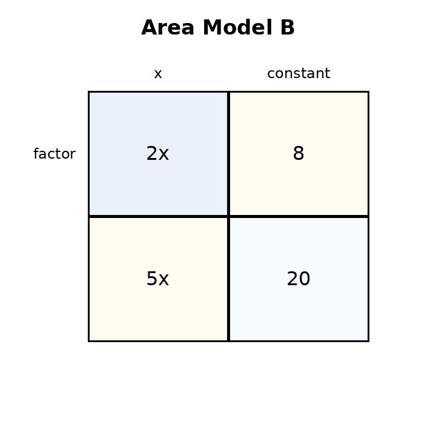
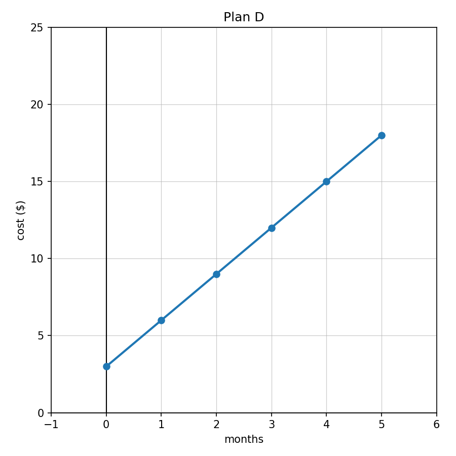

For $-2x+11$, identify the coefficient and the constant term.
Write two equivalent expressions represented by Area Model B.

Compare $5(x+8)$ and $5x+40$. Which form makes the repeated group easier to see? Which form makes the total number of $x$ terms and constants easier to see?
Create a situation that could be represented by $4x+12$. Then write a different equivalent expression, explain both forms, and decide which is more useful for your situation.
Solve: $$z-13=21$$
Solve: $$\frac{n}{3}=12$$
Check whether $t=5$ solves $9t-4=41$.
Write an equation: Four more than three times a number is $28$.
Solve and verify: $$6x-9=39$$
Solve: $$5(x-2)=35$$
A ticket equation is $5+7t=47$. Solve it and explain what the solution could mean in a ticket-sales context.
Two students model the same situation. Student A writes $12+4x=40$. Student B writes $4x=28$. Explain how both equations could represent the same problem and solve.
In $y=6x-1$, identify the starting value and rate of change.
Write a rule for the table.
| $x$ | 0 | 1 | 2 | 3 |
|---|---|---|---|---|
| $y$ | 8 | 10 | 12 | 14 |
Use Plan D. Write a possible context and explain what the intercept and rate mean.

You need to find the output at $x=50$ for a linear relationship. Create a table and equation for a relationship, then explain which representation is most efficient and why.